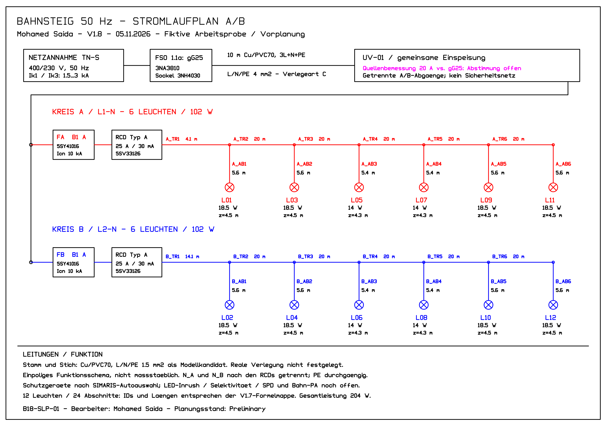
10_Stromlaufplan_Druckqualitaet_400dpi.pngPDF-Rendering / vollstaendige Seite · 3306 × 2328 px
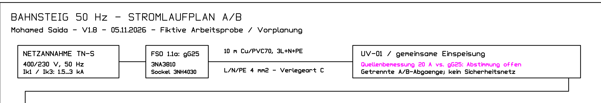
11_Stromlaufplan_Einspeisung_Detail.pngPDF-Rendering / Ausschnitt · 3240 × 559 px
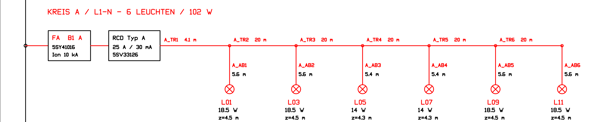
12_Stromlaufplan_Kreis_A_Detail.pngPDF-Rendering / Ausschnitt · 3240 × 652 px
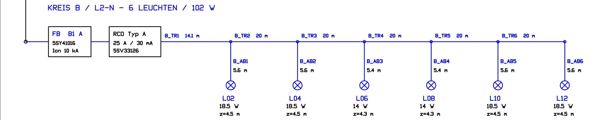
13_Stromlaufplan_Kreis_B_Detail.pngPDF-Rendering / Ausschnitt · 3240 × 640 px
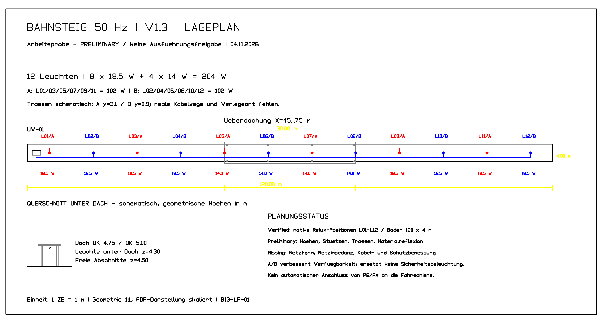
14_Lageplan_Druckqualitaet_400dpi.pngPDF-Rendering / vollstaendige Seite · 3306 × 1778 px
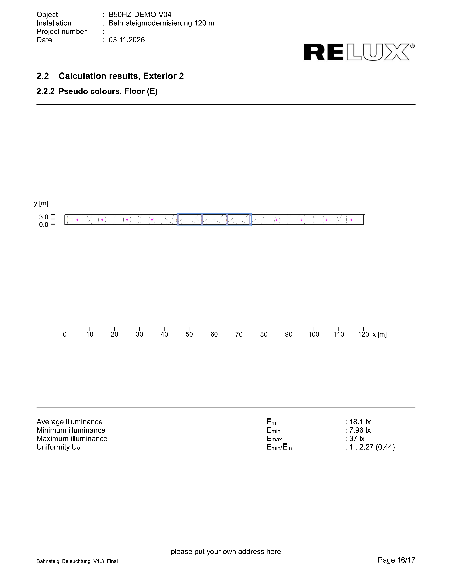
15_Relux_Isolux_Originalseite_400dpi.pngPDF-Rendering / vollstaendige Seite · 3400 × 4400 px
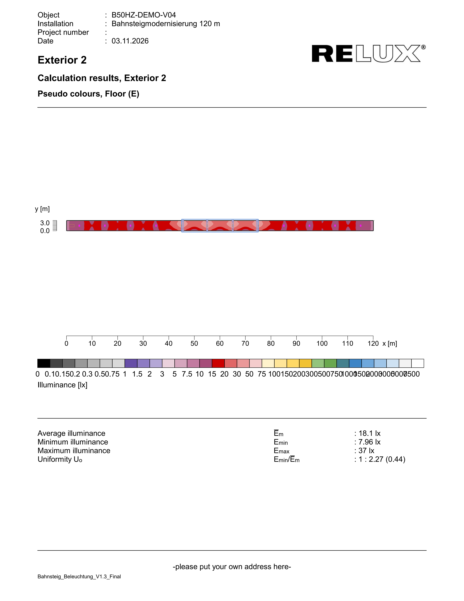
16_Relux_FalseColours_Originalseite_400dpi.pngPDF-Rendering / vollstaendige Seite · 3400 × 4400 px
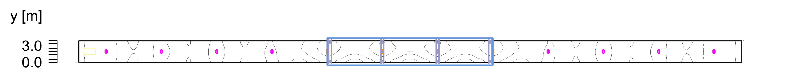
17_Relux_Isolux_Planstreifen.pngPDF-Rendering / Ausschnitt · 2737 × 286 px
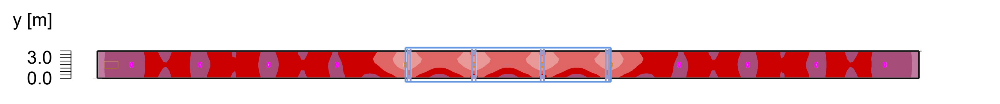
18_Relux_FalseColours_Planstreifen.pngPDF-Rendering / Ausschnitt · 2737 × 286 px
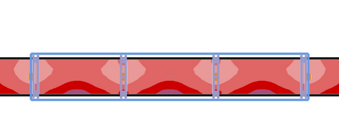
19_Relux_FalseColours_Dachdetail.pngPDF-Rendering / Ausschnitt · 687 × 264 px
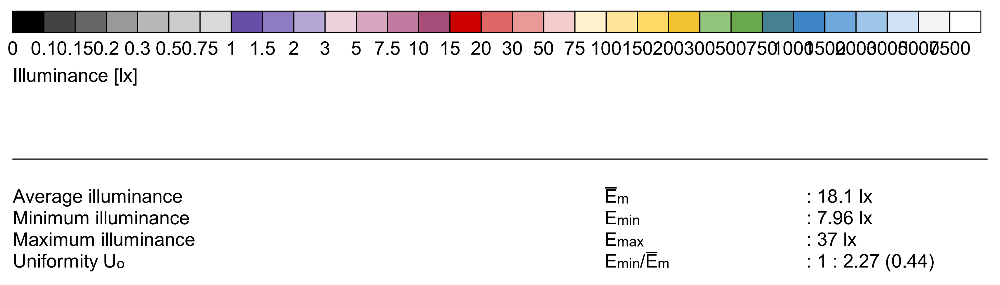
20_Relux_Farbskala_und_Ergebnisse.pngPDF-Rendering / Ausschnitt · 2924 × 836 px
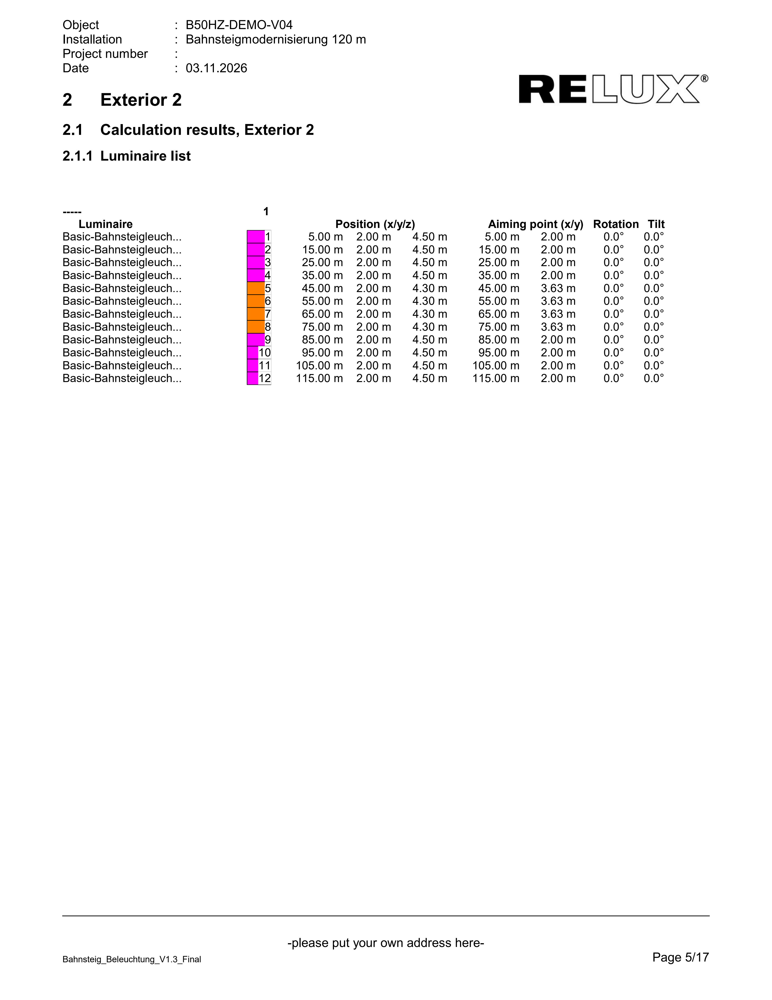
21_Relux_Leuchtenliste_400dpi.pngPDF-Rendering / vollstaendige Seite · 3400 × 4400 px
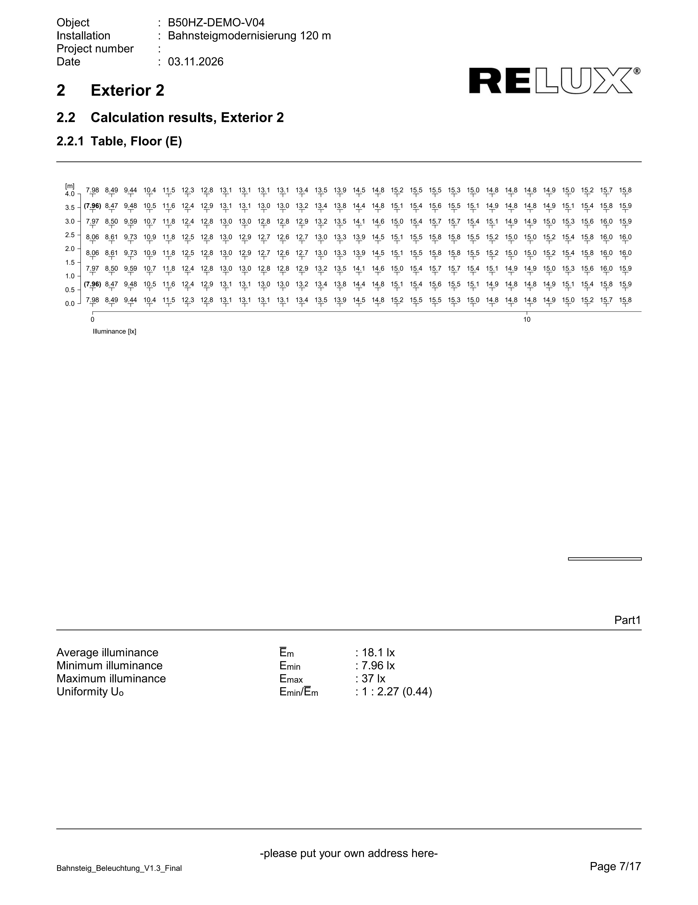
22_Relux_Ergebnistabelle_400dpi.pngPDF-Rendering / vollstaendige Seite · 3400 × 4400 px
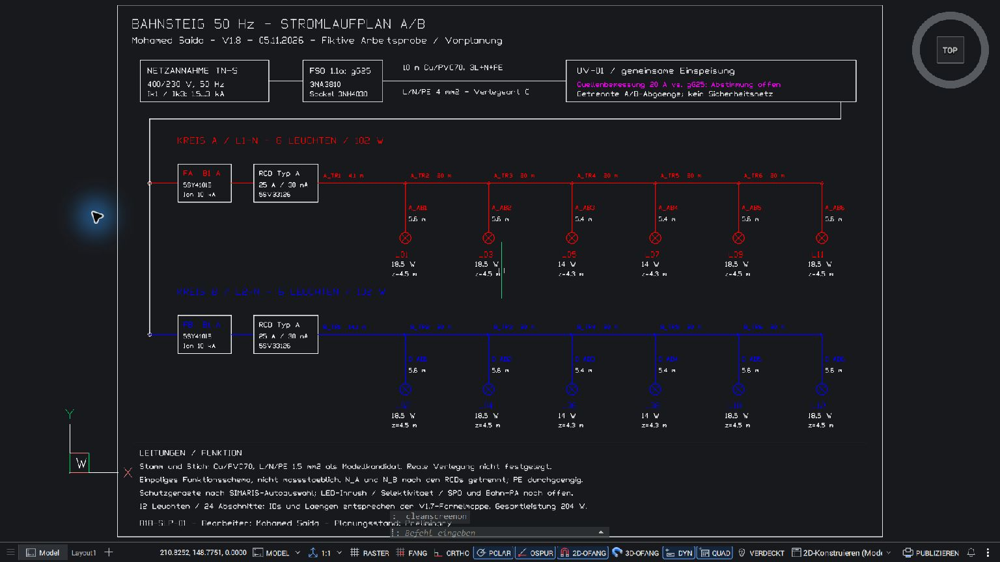
01_BricsCAD_Detailstromlaufplan_Vollbild.jpgNative Bildschirmaufnahme, 05.11.2026 · 1536 × 864 px
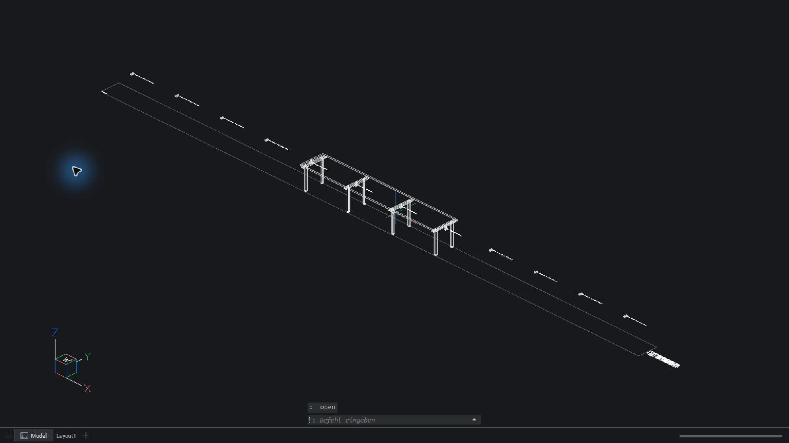
02_BricsCAD_3D_Gesamtansicht.jpgNative Bildschirmaufnahme, 05.11.2026 · 1536 × 864 px
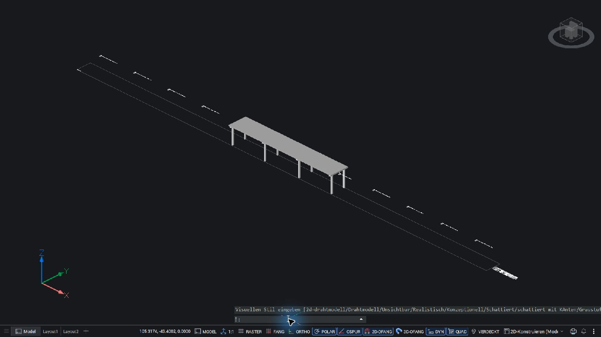
03_BricsCAD_3D_Schattiert_Gesamt.jpgNative Bildschirmaufnahme, 05.11.2026 · 1536 × 864 px
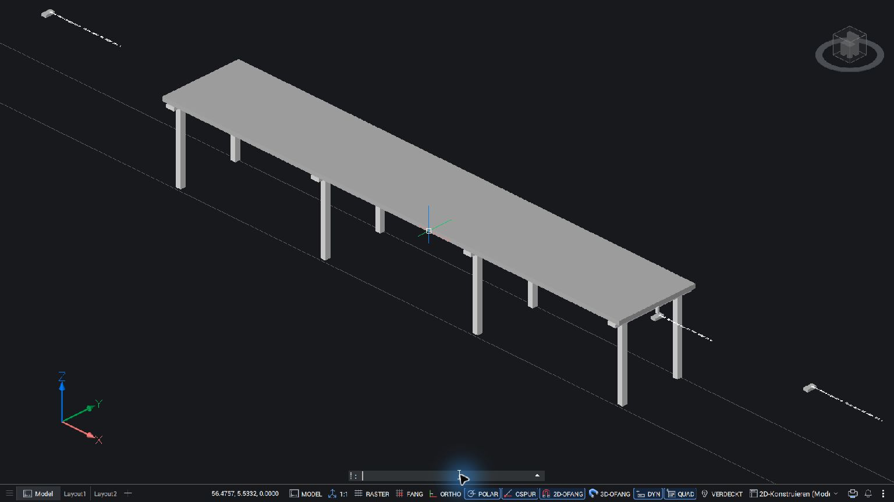
04_BricsCAD_Mitteldach_Detail.jpgNative Bildschirmaufnahme, 05.11.2026 · 1536 × 864 px
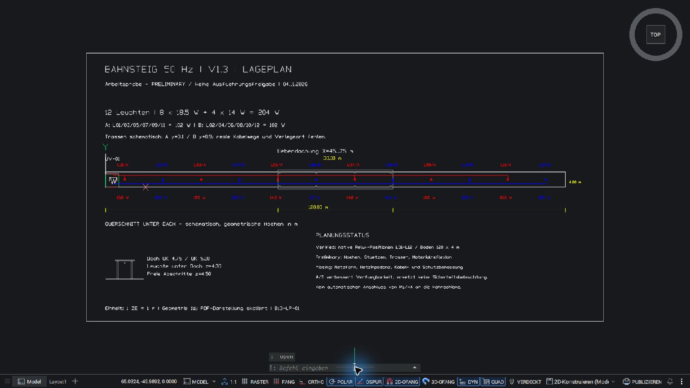
05_BricsCAD_Lageplan_Vollbild.jpgNative Bildschirmaufnahme, 05.11.2026 · 1536 × 864 px
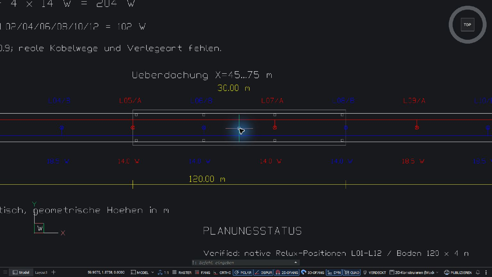
06_BricsCAD_Lageplan_Dachbereich.jpgNative Bildschirmaufnahme, 05.11.2026 · 1536 × 864 px
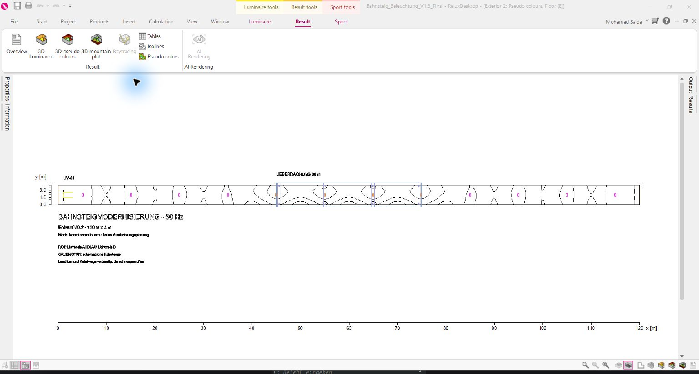
07_Relux_Isolux_Vollbild.jpgNative Bildschirmaufnahme, 05.11.2026 · 1536 × 823 px